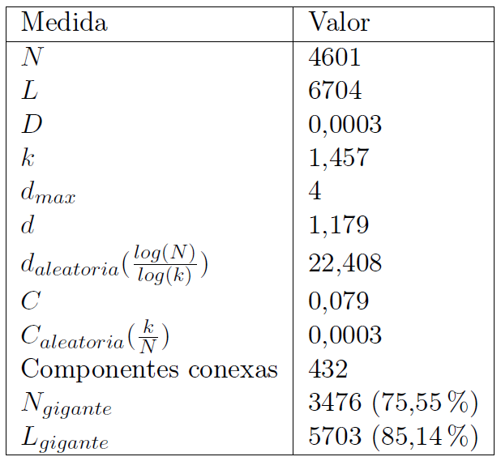
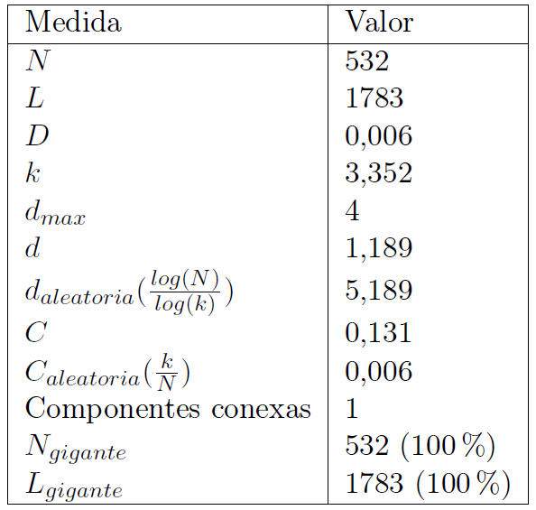

GIW - P2
Caso práctico de Análisis y Evaluación de Redes en Twitter
#AusGP
Francisco Javier Bolívar Lupiáñez
Introducción
Extracción de datos
NodeXL
Tema escogido: #AusGP
Varias extracciones de datos para tener más tuits
Preguntas
¿Qué tipo de aficionado es el mayoritario, el neutral que menciona a más de un piloto o escudería o el fanático que solo menciona a un piloto o escudería?
¿Coincidirán los protagonistas de la carrera con los componentes principales de la red social?
Estructura de la red
Nodos: usuarios (número de seguidores, seguidos, tuits, favoritos y zona horaria)
Aristas: interacción entre usuarios (mención, respuesta o retuit)
Red original: 4601 nodos y 6698 aristas
Filtros
Componente gigante: 3476 nodos (75,55%) y 5703 aristas (85,14%)
k-core (grado 3): 532 nodos y 1783 aristas
Valores de medidas de análisis
Medidas red original
Medidas red filtrada
Propiedades de la red
Grado
Grado: 3,352
Cumple ley de la potencia: Libre de escala
Distancias
Nodos distancia 0: Red dirigida y nodos con grado de salida 0
Diámetro: 4
Distancia media: 1,189
log(N)/log(log(N)) = 3,417: Mundo ultra-pequeño
Coeficiente de clustering
Coeficiente de clustering: 0,131
Nodos con mayor coeficiente de clustering coinciden con los menos importantes
Medidas de centralidad para nodos principales
Comunidades
Gephi. Modularity
Mercedes: 2
Ferrari: 3
Red Bull: 4
Otras: 5
Fernando Alonso: 2
Checo Pérez: 7
Visualización
Fruchterman Reignold
Kamada Kawai
Hubs
@sebvettelnews
@ausgrandprix
Otros pilotos y equipos
Resultados
Preguntas
¿Qué tipo de aficionado es el mayoritario, el neutral que menciona a más de un piloto o escudería o el fanático que solo menciona a un piloto o escudería?
¿Coincidirán los protagonistas de la carrera con los componentes principales de la red social?
Comparación con otros nodos